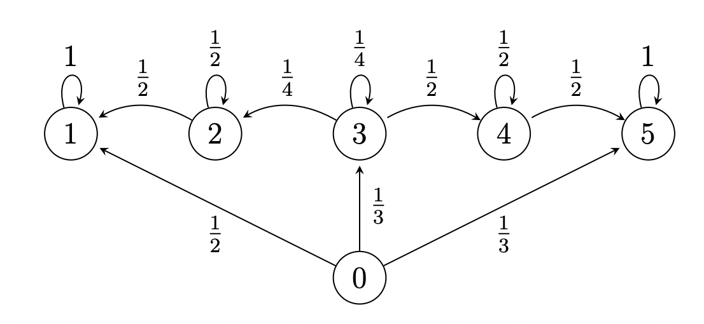
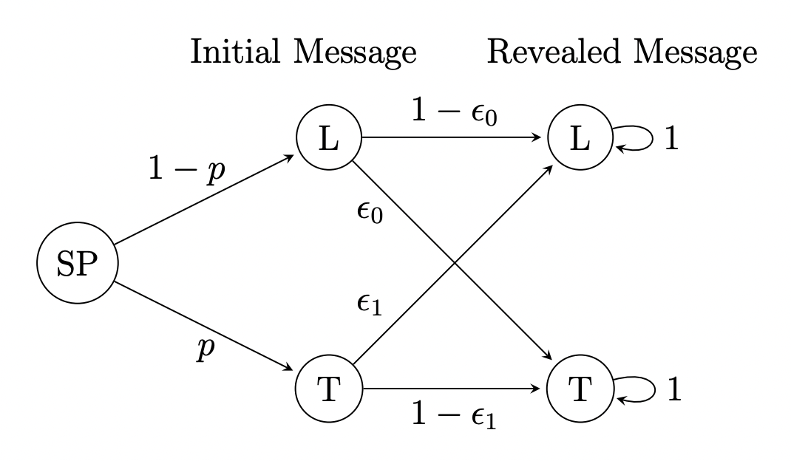

Probability Review/Markov Chain Basics
Note: This is not a real problem set from the class. All of these questions are ones that I either wrote myself or found online or from textbooks. I made these to help supplement my learning and get in extra practice.
This first problem set is a general overview of some discrete probability that will be essential when dealing with Markov chains. Furthermore, this problem set also allows some practice to gain intuition for how finite-state, discrete time Markov chains work. You can access a pdf of the problem set Here, with the pdf of solutions Here.
Problem 1: Ping Pong Tournament
Suppose 2024 World Team Table Tennis Champion is set to be determined with the following procedure. France and Japan are the two leading challengers and they both play in a two-game match. If one of them wins both games, they advance to another two-game second round with China, the reigning champion. China retains their championship unless a second round is required and the challenger beats China in both games. If China wins the initial game of the second round, no more games are played, and China continues their reign of glory.
Moreover, suppose that careful analysis of the play-styles of each team results in the following conclusions:
- The probability that France will beat Japan in any given game is $\frac 35$.
- The probability that China will beat France in any given game is $\frac 12$.
- The probability that France will beat Japan in any given game is $\frac{7}{10}$.
Assume that no ties are possible and that all games are independent.
-
Determine the probabilities that:
- The second round will be required.
- France will win the first round.
- China will retain their championship this year.
- Given that the second round is required, determine the conditional probabilities that:
- France is the surviving challenger.
- China retains their championship this year.
- Given that the second round was required and it comprised of only one game, what is the conditional probability that it was France that won the first round?
Solution
- Under construction
$\color{white}.\color{black}$
Problem 2: Roll of a Die
A $4-$sided die is labeled with the numbers $0,1,2,3$. The die is rolled repeatedly. For each of the following, is it a Markov chain? If so, give its transition matrix. If not, prove it is not by showing that it does not satisfy the definition of Markov chains. In other words, show that there is some choice of states $x_0,x_1,\dots,x_{n-1}$, $i$, $j$ such that:
$$\mathbb{P}\left(X_{n+1}=j|X_0=x_0,X_1=x_1,\dots,X_{n-1}=x_{n-1},X_n=i\right)\neq \mathbb{P}\left(X_{n+1}=j|X_n=i\right)$$If the Markov chain starts from some index other than 0, adjust the definition accordingly. It is sufficient to give one specific counterexample.
- $W_n$ is the highest number that has appeared up to the $n^{\text{th}}$ roll. For example, if we roll $1,0,1,2,1$, then $W_5=2$, because that is the highest number that has been rolled so far. Is $\left(W_n:n\geq 1\right)$ a Markov chain?
- $Y_n$ is the number of $1$'s that appeared in the three most recent rolls up to the $n^{\text{th}}$ roll. For example, if we roll $1,2,3,0,1,1$, then $Y_6=2$ because the most recent three rolls were $0,1,1$ (so we got $1$ twice). Is $\left(Y_n:n\geq 3\right)$ a Markov chain?
- $Z_n$ is the number rolled on the $(n-1)^{\text{th}}$ roll. For example, if we roll $2,1,0,2$, then $Z_4=0$, because the third roll was $0$. Is $\left(Z_n:n\geq 2\right)$ a Markov chain?
Solution
- Under construction.
$\color{white}.\color{black}$
Problem 3: Chain Transitions
Consider the following Markov chain, with states labelled from $0,\dots,5$. The chain makes one transition for each integer increment in time.
Given that the above chain is in state $0$ just before $t=1$, determine the probability that:
- The process enters state $2$ for the first time at $t=k$.
- The process never enters state $4$.
- The process enters state $2$, and then leaves state $2$ on the next time increment.
- The process enters state $1$ for the first time at $t=3$.
- The process is in state $3$ immediately after $t=n$.
Solution
- Under construction.
$\color{white}.\color{black}$
Problem 4: Game of Telephone
The "Game of Telephone" is where a starting player (denoted as $\text{SP}$) whispers a message to the next person in line, and the message is passed along until the last person in line reveals it to the group. However, oftentimes the message becomes radically changed once it is revealed. Suppose that the starting player can either tell a truth ($\text{T}$), with probability $p$, or a lie ($\text{L}$), with probability $1-p$, to start the game off. However, at the end of the game when the message is revealed, an initial lie becomes the truth with probability $\epsilon_0$, and an initial truth becomes a lie with probability $\epsilon_1$. The process can be modelled by the Markov chain below. Assume that each game of telephone is independent.
- What is the probability that the initial message is received correctly? (In other words, an initial truth is revealed as a truth, or an initial lie is revealed as a lie).
- Suppose that after four games of telephone, the revealed messages are Truth, Lie, Truth, Truth, in that order. What is the probability that all of the messages were received correctly?
- The process enters state $2$, and then leaves state $2$ on the next time increment.
- In an effort to improve the reliability of the players in the game, each message is transmitted three times, and it is decided whether the message was received correctly by the majority rule. For example, if the starting player initially tells the truth and transmits this message three times, we take the revealed message as the truth if and only if the revealed message was a truth at least two out of the three times. Then, what is the probability that after these three rounds, a lie is correctly received?
- Suppose we use the same scheme as in part (c). What is the probability that the initial message was a lie, given that the revealed message was a truth, a lie, and a truth after three rounds?
Solution
- Under construction.